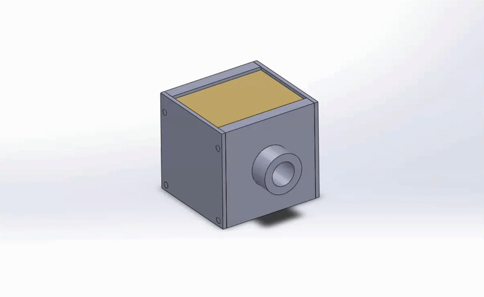

01

HEAT TRANSFER
Copper Cold Plate & 3D-Printed Enclosure
The copper cold plate serves as the primary thermal interface between the processor and the coolant. Its high thermal conductivity allows heat generated by the processor to efficiently transfer into the circulating coolant.
The cold plate is bonded to a custom 3D-printed enclosure, which provides the structural support needed to integrate it into the cooling loop while accommodating the limited space available inside the MacBook Air.